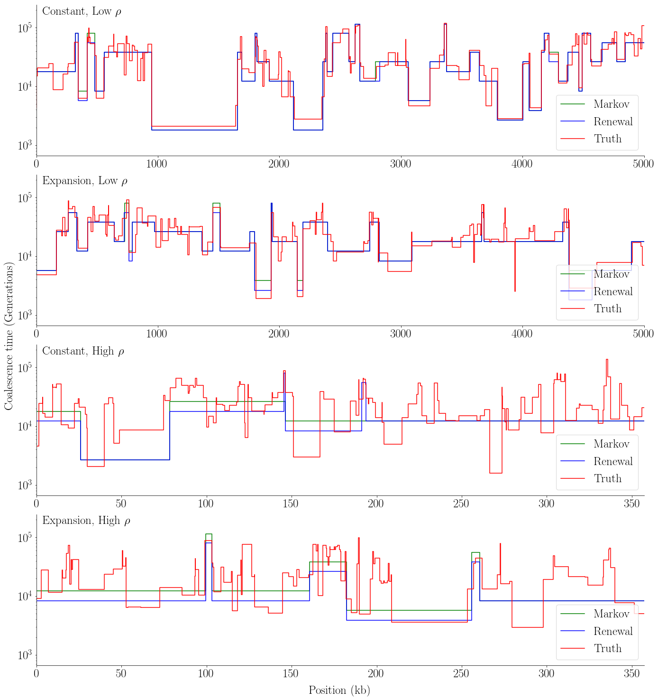
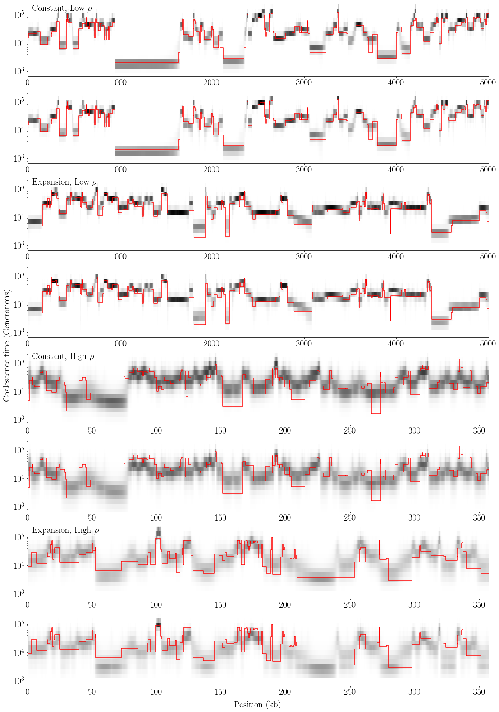
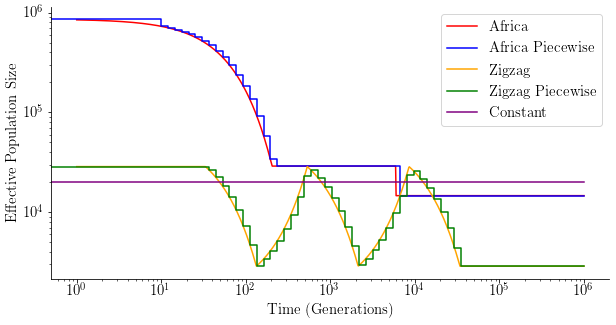
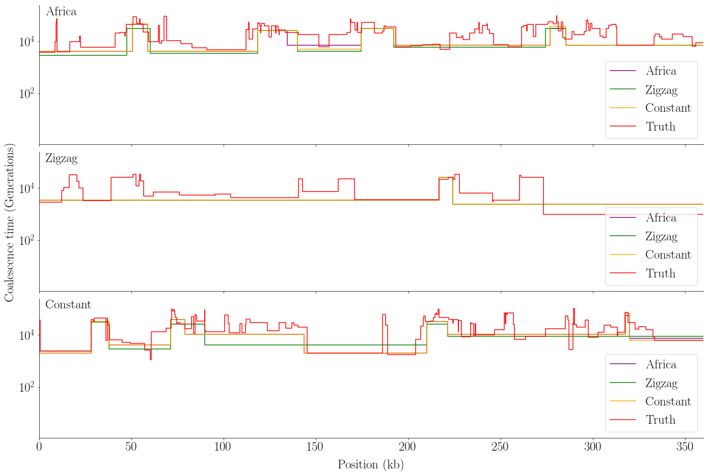
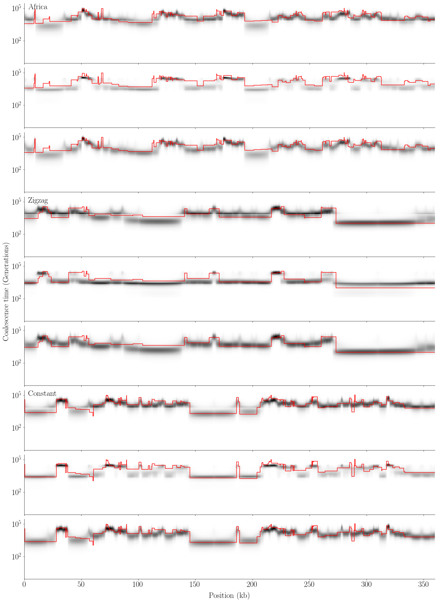

[12]:
from scipy.linalg import expm
from scipy.integrate import quad
from scipy.special import factorial
from scipy.interpolate import PPoly
from scipy.stats import sem
import numpy as np
import pandas as pd
import matplotlib
import seaborn as sns
import msprime as msp
import stdpopsim
[13]:
%matplotlib inline
matplotlib.rcParams.update({
'font.family': 'Times New Roman',
'text.usetex': True,
})
import matplotlib.pyplot as plt
[110]:
folder = '../../../exact_decoding_paper/figures/prior/'
Exact SMC Simulations¶
Simulation 1: Comparing renewal prior with Markov prior¶
Define necessary functions for simulations¶
[14]:
def get_expected_coal_times(times, eta):
r = eta[:-1]
a = times[:-1]
b = times[1:]
dt = b - a
# the exact formula is numerically unstable for small r, so use a taylor expansion.
r_small = (a + b) / 2. - dt ** 2 * r / 12
r_normal = b + 1. / r + dt / (np.expm1(-r * dt))
ary = np.where(r * dt < 1e-4, r_small, r_normal)
ret = np.concatenate([ary, times[None, -1] + 1 / eta[-1:]])
return ret
def get_emissions(ts, w, L_w, mu, ect, w_end = None):
site_locations = [int(v.position)//w for v in ts.variants()]
loc, y = np.unique(site_locations, return_counts=True)
if w_end is not None:
counts = np.zeros(L_w)
not_last = np.repeat(2 * mu * w, L_w - 1)
rate = np.r_[not_last, 2 * mu * w_end]
outer = np.outer(rate, ect)
else:
counts = np.zeros(L_w)
rate = 2 * mu * w
outer = rate * ect[None,:]
counts[loc] = y
emissions = (outer ** counts[:,None]) * np.exp(-outer)/factorial(counts)[:,None]
return emissions
def initial_distribution(times, eta):
x = np.r_[times, float('inf')]
y = PPoly(eta[None,:],x)
Y = y.antiderivative()
cdf_vals = 1 - np.exp(-np.r_[Y(times), float('inf')])
dist = cdf_vals[1:] - cdf_vals[:-1]
return dist
def stationary_distribution(times, eta):
N0 = 1/eta[0]
vt = eta * N0
times_scaled = times / N0
x = np.r_[times_scaled, float('inf')]
y = PPoly(vt[None,:],x)
Y = y.antiderivative()
def exp_int(tau):
return np.exp(-Y(tau))
denominator = quad(exp_int, 0, float('inf'))[0]
def pi(t):
return (t * y(t) * exp_int(t))/denominator
vals = np.r_[Y(times), float('inf')]
cdf_vals = np.r_[np.array([quad(pi, 0 ,t)[0] for t in times_scaled]), 1]
dist = cdf_vals[1:] - cdf_vals[:-1]
return dist
def get_transitions_Markov(times, rho, eta):
x = np.r_[times, float('inf')]
y = PPoly(eta[None,:],x)
Y = y.antiderivative()
A_rho = np.zeros((4,4))
A_rho[0] = [-1, 1, 0, 0]
A_rho[1] = [0, -0.5, 0.5, 0]
A_eta = np.zeros((4,4))
A_eta[1] = [1, -2, 0, 1]
A_eta[2] = [0, 4, -5, 1]
def q(t, s):
if t > s:
e_j = expm(times[s]*rho*A_rho + Y(times[s])*A_eta)
return (e_j[0,1] + e_j[0,2]) * np.exp(-(Y(times[t-1])-Y(times[s]))) * (1-np.exp(-(Y(times[t])-Y(times[t-1]))))
else:
e_k1 = expm(times[t]*rho*A_rho + Y(times[t])*A_eta)
e_k2 = expm(times[t-1]*rho*A_rho + Y(times[t-1])*A_eta)
if t < s:
return e_k1[0,3] - e_k2[0,3]
else:
e_k3 = expm((times[t] - times[t-1])*rho*A_rho + (Y(times[t]) - Y(times[t-1]))*A_eta)
p = e_k1[0,0]
for i in range(3):
p += e_k2[0,i] * e_k3[i,3]
return p
transitions = np.empty((T,T))
for i in range(1,T+1):
for j in range(1,T+1):
if j < T:
transitions[i-1,j-1] = q(j,i)
else:
transitions[i-1,j-1] = np.max([1 - transitions[i-1,:j-1].sum(), 0])
return np.maximum(transitions, 0)
def get_transitions_Renewal(times, ect, rho, eta):
# rows = stationary_distribution(times, eta)
rows = initial_distribution(times, eta)
cols = -np.expm1(-rho*ect)
diag = np.exp(-rho*ect)
transitions = np.outer(cols, rows) + np.diag(diag)
return transitions
def forward(L_w, T, init_dist, emissions, transitions):
alpha = np.empty((L_w, T))
alpha[0] = init_dist * emissions[0]
c = np.empty(L_w)
c[0] = alpha[0].sum()
alpha[0] /= c[0]
for i in range(1, L_w):
alpha[i] = emissions[i] * (alpha[i-1][:,None] * transitions).sum(axis=0)
c[i] = alpha[i].sum()
alpha[i] /= c[i]
return alpha, c
def backward(L_w, T, emissions, transitions, c):
beta = np.empty((L_w, T))
beta[-1] = np.ones(T)
for i in range(L_w-2, -1, -1):
beta[i] = (beta[i+1] * emissions[i+1,:] * transitions).sum(axis=1)
beta[i] /= c[i+1]
return beta
def get_posterior(L_w, T, init_dist, emissions, transitions):
alpha, c = forward(L_w, T, init_dist, emissions, transitions)
beta = backward(L_w, T, emissions, transitions, c)
return np.maximum(alpha * beta,0)
def get_viterbi(log_T, log_B, log_pi, L):
K = len(log_pi)
T1 = np.zeros([L, K])
T2 = np.zeros([L, K], dtype=int)
T1[0] = log_pi + log_B[0]
for i in range(1,L):
prob = T1[i-1][:,None] + log_T + log_B[i]
T1[i] = np.max(prob, axis=0)
T2[i] = np.argmax(prob, axis=0)
Z = np.zeros(L, dtype=int)
Z[L-1] = np.argmax(T1[L-1])
for i in range(L - 1, 0, -1):
Z[i - 1] = T2[i, Z[i]]
return Z
def run_sim(num_sim, N0, mu, r, n, L, w, times, eta, rho, de=None):
L_w = L // w
T = times.size
gammas_Markov = np.empty((num_sim, L_w, T))
gammas_Renewal = np.empty((num_sim, L_w, T))
viterbis_Markov = np.empty((num_sim, L_w), dtype=int)
viterbis_Renewal = np.empty((num_sim, L_w), dtype=int)
tss = []
init_dist = initial_distribution(times, eta)
ect = get_expected_coal_times(times, eta)
transitions_Markov = get_transitions_Markov(times, rho, eta)
transitions_Renewal = get_transitions_Renewal(times, ect, rho, eta)
for i in range(num_sim):
seed = i+1
ts = msp.simulate(Ne=N0,
mutation_rate=mu,
recombination_rate=r,
sample_size=n,
length=L,
random_seed=seed,
demographic_events=de)
tss.append(ts)
emissions = get_emissions(ts, w, L_w, mu, ect)
gammas_Markov[i] = get_posterior(L_w, T, init_dist, emissions, transitions_Markov)
gammas_Renewal[i] = get_posterior(L_w, T, init_dist, emissions, transitions_Renewal)
viterbis_Markov[i] = get_viterbi(np.log(transitions_Markov), np.log(emissions), np.log(init_dist), L_w)
viterbis_Renewal[i] = get_viterbi(np.log(transitions_Renewal), np.log(emissions), np.log(init_dist), L_w)
return gammas_Markov, gammas_Renewal, viterbis_Markov, viterbis_Renewal, tss, ect
Functions to plot results¶
[15]:
def plot_viterbi(viterbis_Markov, viterbis_renewal, tss, seed, ects, L, w, rs, name):
size = 25
L_w = L // w
scale_to_kb = 1000 / w
fig, axs = plt.subplots(4, figsize=(20, 21), sharey=True)
fig.add_subplot(111, frameon=False)
plt.tick_params(labelcolor='none', top=False, bottom=False, left=False, right=False)
plot_labels = [r'Constant, Low $\rho$', r'Expansion, Low $\rho$',
r'Constant, High $\rho$', r'Expansion, High $\rho$']
for i, ax in enumerate(axs):
ts = tss[i][seed]
ect = ects[i]
pmap = viterbis_Markov[i][seed]
dpmap, = np.diff(pmap).nonzero()
x = np.r_[0, dpmap, L_w - 1]
y = ect[pmap[x]]
ax.plot(x / scale_to_kb, y, drawstyle="steps-pre", color="green", label='Markov')
pmap = viterbis_Renewal[i][seed]
dpmap, = np.diff(pmap).nonzero()
x = np.r_[0, dpmap, L_w - 1]
y = ect[pmap[x]]
ax.plot(x / scale_to_kb, y, drawstyle="steps-pre", color="blue", label='Renewal')
truth = [(tree.interval[0] / w, tree.get_tmrca(0, 1)) for tree in ts.trees()]
x, y = zip(*truth)
x = np.r_[x, L_w]
y = np.r_[y, y[-1]]
ax.plot(x / scale_to_kb, y, drawstyle="steps-post", color="red", label='Truth')
ax.set_yscale("log")
ax.xaxis.set_tick_params(labelsize=size)
ax.yaxis.set_tick_params(labelsize=size)
ax.legend(loc = 'lower right', prop={'size': size})
ax.text(0.01, .99, plot_labels[i], transform=ax.transAxes,
fontsize=size, va='top')
if i < 2:
ax.set_xlim(0, L_w / scale_to_kb)
else:
ax.set_xlim(0, L_w / scale_to_kb * ratio)
sns.despine()
if i == 0:
ymin = np.amin(y)
ymax = np.amax(y)
else:
ylow = np.amin(y)
if ylow < ymin:
ymin = ylow
yhigh = np.amax(y)
if yhigh > ymax:
ymax = yhigh
plt.setp(ax.get_xticklabels(), fontsize=size)
plt.setp(ax.get_yticklabels(), fontsize=size)
plt.setp(ax, ylim=(0.75 * ymin, 1.25 * ymax))
plt.xlabel('Position (kb)', fontsize=size, labelpad = size)
plt.ylabel('Coalescence time (Generations)', fontsize=size, labelpad = size)
plt.tight_layout()
plt.savefig(folder + name, bbox_inches='tight')
plt.show()
def plot_posterior(gammas_Markov, gammas_Renewal, tss, seed, ects, L, w, ratio, name):
size = 25
L_w = L // w
scale_to_kb = 1000 / w
fig, axs = plt.subplots(8, figsize=(20, 28), sharey=True)
fig.add_subplot(111, frameon=False)
plt.tick_params(labelcolor='none', top=False, bottom=False, left=False, right=False)
plot_labels = [r'Constant, Low $\rho$', r'Expansion, Low $\rho$',
r'Constant, High $\rho$', r'Expansion, High $\rho$']
for i, ax in enumerate(axs):
if i % 2 == 0:
gamma = gammas_Markov[i//2][seed]
ax.text(0.01, .99, plot_labels[i//2], transform=ax.transAxes,
fontsize=size, va='top')
else:
gamma = gammas_Renewal[i//2][seed]
ts = tss[i//2][seed]
ect = ects[i//2]
truth = [(tree.interval[0] / w, tree.get_tmrca(0, 1)) for tree in ts.trees()]
x, y = zip(*truth)
x = np.r_[x, L_w]
y = np.r_[y, y[-1]]
ax.plot(x / scale_to_kb, y, drawstyle="steps-post", color="red", label='Truth')
X, Y = np.meshgrid(np.arange(L_w), ect)
ax.pcolormesh(X / scale_to_kb, Y, gamma.T, cmap="Greys", rasterized=True)
if i//2 < 2:
ax.set_xlim(0, L_w / scale_to_kb)
else:
ax.set_xlim(0, L_w / scale_to_kb * ratio)
ax.set_yscale("log")
ax.xaxis.set_tick_params(labelsize=size)
ax.yaxis.set_tick_params(labelsize=size)
sns.despine()
if i == 0:
ymin = np.amin(y)
ymax = np.amax(y)
else:
ylow = np.amin(y)
if ylow < ymin:
ymin = ylow
yhigh = np.amax(y)
if yhigh > ymax:
ymax = yhigh
plt.setp(ax.get_xticklabels(), fontsize=size)
plt.setp(ax.get_yticklabels(), fontsize=size)
plt.setp(ax, ylim=(0.75 * ymin, 1.25 * ymax))
plt.xlabel('Position (kb)', fontsize=size, labelpad = size)
plt.ylabel('Coalescence time (Generations)', fontsize=size, labelpad = size)
plt.tight_layout()
plt.savefig(folder + name, bbox_inches='tight')
plt.show()
Functions to create tables¶
[16]:
def get_truth(tss, w, times):
T = times.size
num_sim = len(tss)
L = tss[0].sequence_length
L_w = int(L // w)
truth = np.empty((num_sim, L_w, T))
tmrca = np.empty((num_sim, L_w))
for i in range(len(tss)):
ts = tss[i]
cts = [(int(tree.interval[0] / w),
int(tree.interval[1] / w),
tree.get_tmrca(0,1)) for tree in ts.trees()]
x1, x2, y = zip(*cts)
for j in range(len(cts)):
left = x1[j]
right = x2[j]
t = y[j]
epoch = np.argmax(t < times) - 1
truth[i, left:right, epoch] = 1
tmrca[i, left:right] = t
return tmrca, truth
def get_mean_se(gammas, dist, num_pos):
l1 = (gammas * dist).sum(axis=(1,2)) / num_pos
mean = np.average(l1)
se = sem(l1)
return mean, se
def save_table(tab, name):
index_list = ['1','2','3','4']
tab['Scenario'] = index_list
tab = tab.set_index('Scenario').T
tab.to_latex(folder + name)
display(tab)
def format_entry(mean, se, dec_places):
entry = f'{mean:.{dec_places}f} ({se:.{dec_places}f})'
return entry
mfunc = np.vectorize(format_entry)
Create containers for all 4 scenarios
[17]:
gammas_Markov = [None] * 4
gammas_Renewal = [None] * 4
viterbis_Markov = [None] * 4
viterbis_Renewal = [None] * 4
tss = [None] * 4
#These parameters are the same for each scenario
num_sim = 25 #number of simulation runs
N0 = 1e4 #base effective population size
mu = 1.4e-8 #mutation rate
L = 5_000_000 #sequence length
n = 2 #sample size
w = 100 #window size
T = 32
times = np.r_[0.0, np.geomspace(1e1, 1e6, T-1)]
Scenario 1¶
Constant population (N=1e4)
mutation rate = 1.4e-8
recombination rate = 1e-9
[18]:
r = 1e-9
eta = np.repeat(1/(2*N0), T)
rho = 2*r*w
ret = run_sim(num_sim, N0, mu, r, n, L, w, times, eta, rho)
gammas_Markov[0], gammas_Renewal[0], viterbis_Markov[0], viterbis_Renewal[0], tss[0], ect_constant = ret
/home/caleb/Desktop/Git/HMM-EM/venv/lib/python3.7/site-packages/ipykernel_launcher.py:186: RuntimeWarning: divide by zero encountered in log
/home/caleb/Desktop/Git/HMM-EM/venv/lib/python3.7/site-packages/ipykernel_launcher.py:187: RuntimeWarning: divide by zero encountered in log
Scenario 2¶
Population Expansion in the recent past (N=1e6 at time=0, N=5e-5 at time 1000, N=1e-4 at time 3000)
mutation rate = 1.4e-8
recombination rate = 1e-9
[19]:
r = 1e-9
eta = 1/np.r_[np.repeat(200 * N0, 13), np.repeat(N0, 3), np.repeat(2 * N0, T-16)]
rho = 2*r*w
#Add demographic event for variable population size
de = [msp.PopulationParametersChange(time=0, initial_size=100 * N0),
msp.PopulationParametersChange(time=times[13], initial_size=0.5 * N0),
msp.PopulationParametersChange(time=times[16], initial_size=N0)]
ret = run_sim(num_sim, N0, mu, r, n, L, w, times, eta, rho, de)
gammas_Markov[1], gammas_Renewal[1], viterbis_Markov[1], viterbis_Renewal[1], tss[1], ect_variable = ret
/home/caleb/Desktop/Git/HMM-EM/venv/lib/python3.7/site-packages/ipykernel_launcher.py:186: RuntimeWarning: divide by zero encountered in log
/home/caleb/Desktop/Git/HMM-EM/venv/lib/python3.7/site-packages/ipykernel_launcher.py:187: RuntimeWarning: divide by zero encountered in log
Scenario 3¶
Constant population (N=1e4)
mutation rate = 1.4e-8
recombination rate = 1.4e-8
[20]:
r = 1.4e-8
eta = np.repeat(1/(2*N0), T)
rho = 2*r*w
ret = run_sim(num_sim, N0, mu, r, n, L, w, times, eta, rho)
gammas_Markov[2], gammas_Renewal[2], viterbis_Markov[2], viterbis_Renewal[2], tss[2], _ = ret
/home/caleb/Desktop/Git/HMM-EM/venv/lib/python3.7/site-packages/ipykernel_launcher.py:186: RuntimeWarning: divide by zero encountered in log
/home/caleb/Desktop/Git/HMM-EM/venv/lib/python3.7/site-packages/ipykernel_launcher.py:187: RuntimeWarning: divide by zero encountered in log
Scenario 4¶
Population Expansion in the recent past (N=1e6 at time=0, N=5e-5 at time 1000, N=1e-4 at time 3000)
mutation rate = 1.4e-8
recombination rate = 1.4e-8
[21]:
r = 1.4e-8
eta = 1/np.r_[np.repeat(200 * N0, 13), np.repeat(N0, 3), np.repeat(2 * N0, T-16)]
rho = 2*r*w
#Add demographic event for variable population size
de = [msp.PopulationParametersChange(time=0, initial_size=100 * N0),
msp.PopulationParametersChange(time=times[13], initial_size=0.5 * N0),
msp.PopulationParametersChange(time=times[16], initial_size=N0)]
ret = run_sim(num_sim, N0, mu, r, n, L, w, times, eta, rho, de)
gammas_Markov[3], gammas_Renewal[3], viterbis_Markov[3], viterbis_Renewal[3], tss[3], _ = ret
/home/caleb/Desktop/Git/HMM-EM/venv/lib/python3.7/site-packages/ipykernel_launcher.py:186: RuntimeWarning: divide by zero encountered in log
/home/caleb/Desktop/Git/HMM-EM/venv/lib/python3.7/site-packages/ipykernel_launcher.py:187: RuntimeWarning: divide by zero encountered in log
Plot Viterbi and posterior for one run under each scenario¶
[22]:
plot_seed = 6
ects= [ect_constant, ect_variable] * 2
ratio = 1e-9/1.4e-8
plot_viterbi(viterbis_Markov, viterbis_Renewal, tss, plot_seed, ects, L, w, ratio, 'viterbi1.pdf')

[23]:
plot_posterior(gammas_Markov, gammas_Renewal, tss, plot_seed, ects, L, w, ratio, 'posterior1.pdf')

Creating tables¶
[24]:
columns = ['Markov', 'Renewal']
df_abs = pd.DataFrame(columns=columns)
df_log = pd.DataFrame(columns=columns)
for i in range(4):
tmrca, truth = get_truth(tss[i], w, times)
if i%2==0:
dist_abs = np.abs(ect_constant - tmrca[:,:,None])
dist_log = np.abs(np.log10(ect_constant) - np.log10(tmrca[:,:,None]))
else:
dist_abs = np.abs(ect_variable - tmrca[:,:,None])
dist_log = np.abs(np.log10(ect_variable) - np.log10(tmrca[:,:,None]))
mean1, se1 = get_mean_se(gammas_Markov[i], dist_abs, L // w)
mean2, se2 = get_mean_se(gammas_Renewal[i], dist_abs, L // w)
mean3, se3 = get_mean_se(gammas_Markov[i], dist_log, L // w)
mean4, se4 = get_mean_se(gammas_Renewal[i], dist_log, L // w)
df_abs.loc[i] = [f'{mean1:.2f} ({se1:.2f})', f'{mean2:.2f} ({se2:.2f})']
df_log.loc[i] = [f'{mean3:.4f} ({se3:.4f})', f'{mean4:.4f} ({se4:.4f})']
[25]:
save_table(df_abs, 'table1_1.tex')
| Scenario | 1 | 2 | 3 | 4 |
|---|---|---|---|---|
| Markov | 6075.50 (215.59) | 5187.24 (187.27) | 12037.25 (298.71) | 12112.81 (106.44) |
| Renewal | 6068.04 (209.11) | 5187.49 (184.34) | 11476.92 (282.36) | 11571.28 (97.99) |
[26]:
save_table(df_log, 'table1_2.tex')
| Scenario | 1 | 2 | 3 | 4 |
|---|---|---|---|---|
| Markov | 0.1362 (0.0035) | 0.1281 (0.0024) | 0.3051 (0.0013) | 0.3006 (0.0014) |
| Renewal | 0.1437 (0.0026) | 0.1359 (0.0025) | 0.3451 (0.0046) | 0.3422 (0.0014) |
[27]:
columns = pd.MultiIndex.from_tuples([('Markov', 'Q1'), ('Renewal', 'Q1'),
('Markov', 'Q2'), ('Renewal', 'Q2'),
('Markov', 'Q3'), ('Renewal', 'Q3'),
('Markov', 'Q4'), ('Renewal', 'Q4')])
df_abs = pd.DataFrame(columns=columns)
df_log = pd.DataFrame(columns=columns)
count = np.empty((4, 4, num_sim))
def get_row(l1, dec_places):
mean = np.average(l1, axis=0)
se = sem(l1, axis=0)
row = [f'{m:.{dec_places}f} ({s:.{dec_places}f})' for m, s in zip(mean, se)]
return row
for i in range(4):
df_abs.loc[i] = [None] * 8
df_log.loc[i] = [None] * 8
tmrca, truth = get_truth(tss[i], w, times)
l11 = np.empty((num_sim, 4))
l12 = np.empty((num_sim, 4))
l13 = np.empty((num_sim, 4))
l14 = np.empty((num_sim, 4))
if i%2==0:
dist_abs = np.abs(ect_constant - tmrca[:,:,None])
dist_log = np.abs(np.log10(ect_constant) - np.log10(tmrca[:,:,None]))
else:
dist_abs = np.abs(ect_variable - tmrca[:,:,None])
dist_log = np.abs(np.log10(ect_variable) - np.log10(tmrca[:,:,None]))
for j in range(num_sim):
full_Markov_abs = gammas_Markov[i][j] * dist_abs[j]
full_Renewal_abs = gammas_Renewal[i][j] * dist_abs[j]
full_Markov_log = gammas_Markov[i][j] * dist_log[j]
full_Renewal_log = gammas_Renewal[i][j] * dist_log[j]
uniq_t = np.unique(tmrca)
breaks = np.quantile(uniq_t, [0, 0.25, 0.5, 0.75])
for k in range(4):
if k != 3:
inds_k = (tmrca[j] >= breaks[k]) & (tmrca[j] < breaks[k+1])
else:
inds_k = (tmrca[j] >= breaks[3])
num_pos = inds_k.sum()
count[i,k,j] = num_pos
l11[j,k] = full_Markov_abs[inds_k].sum() / num_pos
l12[j,k] = full_Renewal_abs[inds_k].sum() / num_pos
l13[j,k] = full_Markov_log[inds_k].sum() / num_pos
l14[j,k] = full_Renewal_log[inds_k].sum() / num_pos
df_abs.loc[i][::2] = get_row(l11, 2)
df_abs.loc[i][1::2] = get_row(l12, 2)
df_log.loc[i][::2] = get_row(l13, 4)
df_log.loc[i][1::2] = get_row(l14, 4)
[28]:
mean = np.average(count, axis=2)
se = sem(count, axis=2)
entries = mfunc(mean, se, 2)
df = pd.DataFrame(data=entries, columns=['Q1', 'Q2', 'Q3', 'Q4'])
df['Scenario'] = ['1', '2', '3', '4']
df = df.set_index('Scenario').T
df.to_latex(folder + 'locicounts.tex')
display(df)
| Scenario | 1 | 2 | 3 | 4 |
|---|---|---|---|---|
| Q1 | 25878.20 (951.37) | 28103.76 (1075.15) | 27807.96 (580.26) | 27659.64 (233.24) |
| Q2 | 12037.56 (646.81) | 10589.40 (702.38) | 10931.92 (331.94) | 11149.32 (143.83) |
| Q3 | 7917.24 (461.61) | 7231.24 (509.98) | 7200.76 (178.59) | 7119.12 (95.21) |
| Q4 | 4167.00 (360.71) | 4075.60 (272.09) | 4059.36 (124.89) | 4071.92 (90.72) |
[29]:
save_table(df_abs, 'table1_3.tex')
| Scenario | 1 | 2 | 3 | 4 | |
|---|---|---|---|---|---|
| Markov | Q1 | 2840.79 (124.42) | 2219.61 (101.38) | 6820.01 (245.65) | 6672.23 (88.84) |
| Renewal | Q1 | 2887.14 (129.53) | 2273.91 (100.00) | 5292.75 (180.86) | 5256.89 (55.12) |
| Markov | Q2 | 6524.06 (131.61) | 6106.74 (122.89) | 13346.56 (35.50) | 13465.23 (57.68) |
| Renewal | Q2 | 6604.09 (117.57) | 6123.72 (107.90) | 11463.27 (38.05) | 11665.01 (35.60) |
| Markov | Q3 | 10543.82 (239.47) | 9716.04 (219.67) | 18831.10 (64.05) | 18957.97 (67.16) |
| Renewal | Q3 | 10454.31 (249.99) | 9528.27 (225.84) | 19538.07 (72.65) | 19682.76 (71.76) |
| Markov | Q4 | 17242.02 (460.92) | 16362.35 (471.86) | 33016.17 (212.12) | 33526.33 (226.10) |
| Renewal | Q4 | 16959.09 (505.93) | 16341.50 (601.40) | 40181.58 (263.39) | 40141.12 (279.70) |
[30]:
save_table(df_log, 'table1_4.tex')
| Scenario | 1 | 2 | 3 | 4 | |
|---|---|---|---|---|---|
| Markov | Q1 | 0.1479 (0.0056) | 0.1328 (0.0033) | 0.3212 (0.0020) | 0.3080 (0.0022) |
| Renewal | Q1 | 0.1563 (0.0045) | 0.1413 (0.0034) | 0.3299 (0.0057) | 0.3119 (0.0018) |
| Markov | Q2 | 0.1279 (0.0023) | 0.1253 (0.0023) | 0.2755 (0.0016) | 0.2863 (0.0016) |
| Renewal | Q2 | 0.1373 (0.0024) | 0.1336 (0.0024) | 0.3277 (0.0019) | 0.3480 (0.0022) |
| Markov | Q3 | 0.1255 (0.0029) | 0.1242 (0.0036) | 0.2826 (0.0020) | 0.2857 (0.0022) |
| Renewal | Q3 | 0.1324 (0.0033) | 0.1293 (0.0039) | 0.3769 (0.0024) | 0.3857 (0.0024) |
| Markov | Q4 | 0.1197 (0.0036) | 0.1216 (0.0032) | 0.3168 (0.0026) | 0.3178 (0.0021) |
| Renewal | Q4 | 0.1247 (0.0040) | 0.1278 (0.0036) | 0.4546 (0.0029) | 0.4568 (0.0023) |
Simulation 2: Effect of Demographic Prior¶
Redefine some functions for second simulation¶
[38]:
def plot_viterbi(viterbis, tss, ects, L_w, w, name):
size = 25
scale_to_kb = 1000 / w
width = 3600
fig, axs = plt.subplots(3, figsize=(20, 13.5), sharex=True, sharey=True)
fig.add_subplot(111, frameon=False)
plt.tick_params(labelcolor='none', top=False, bottom=False, left=False, right=False)
labels = ['Africa', 'Zigzag', 'Constant']
colors = ['purple', 'green', 'orange']
for i, ax in enumerate(axs):
ts = tss[i]
for j in range(3):
ect = ects[j]
pmap = viterbis[i,j]
dpmap, = np.diff(pmap).nonzero()
x = np.r_[0, dpmap, L_w-1]
y = ect[pmap[x]]
ax.plot(x / scale_to_kb, y, drawstyle="steps-pre", color=colors[j], label=labels[j])
truth = [(tree.interval[0] / w, tree.get_tmrca(0, 1)) for tree in ts.trees()]
x, y = zip(*truth)
x = np.r_[x, L_w]
y = np.r_[y, y[-1]]
ax.plot(x / scale_to_kb, y, drawstyle="steps-post", color="red", label='Truth')
ax.set_yscale("log")
ax.xaxis.set_tick_params(labelsize=size)
ax.yaxis.set_tick_params(labelsize=size)
ax.legend(loc = 'lower right', prop={'size': size})
ax.text(0.01, .99, labels[i], transform=ax.transAxes,
fontsize=size, va='top')
sns.despine()
if i == 0:
ymin = np.amin(y[:width])
ymax = np.amax(y[:width])
else:
ylow = np.amin(y[:width])
if ylow < ymin:
ymin = ylow
yhigh = np.amax(y[:width])
if yhigh > ymax:
ymax = yhigh
plt.setp(ax.get_xticklabels(), fontsize=size)
plt.setp(ax.get_yticklabels(), fontsize=size)
plt.setp(ax, xlim=(0, width/scale_to_kb))
plt.setp(ax, ylim=(0.75 * ymin, 1.25 * ymax))
plt.xlabel('Position (kb)', fontsize=size, labelpad = size)
plt.ylabel('Coalescence time (Generations)', fontsize=size, labelpad = size)
plt.tight_layout()
plt.savefig(folder + name, bbox_inches='tight')
plt.show()
[31]:
def plot_posterior(gammas, tss, ects, L_w, w, name):
size = 25
scale_to_kb = 1000 / w
width = 3600
fig, axs = plt.subplots(9, figsize=(20, 27), sharex=True, sharey=True)
fig.add_subplot(111, frameon=False)
plt.tick_params(labelcolor='none', top=False, bottom=False, left=False, right=False)
labels = ['Africa', 'Zigzag', 'Constant']
for i, ax in enumerate(axs):
ind1 = i//3
ts = tss[ind1]
ind2 = i % 3
if ind2 == 0:
ax.text(0.01, .99, labels[ind1], transform=ax.transAxes,
fontsize=size, va='top')
ect = ects[ind2]
gamma = gammas[ind1,ind2,:width]
truth = [(tree.interval[0] / w, tree.get_tmrca(0, 1)) for tree in ts.trees()]
x, y = zip(*truth)
x = np.r_[x, L_w]
y = np.r_[y, y[-1]]
ax.plot(x / scale_to_kb, y, drawstyle="steps-post", color="red", label='Truth')
X, Y = np.meshgrid(np.arange(width), ect)
im = ax.pcolormesh(X / scale_to_kb, Y, gamma.T, cmap="Greys", rasterized=True)
# if unique_clim:
# im.set_clim(np.amin(gamma), np.amax(gamma))
ax.set_yscale("log")
ax.xaxis.set_tick_params(labelsize=size)
ax.yaxis.set_tick_params(labelsize=size)
sns.despine()
if i == 0:
ymin = np.amin(y)
ymax = np.amax(y)
else:
ylow = np.amin(y)
if ylow < ymin:
ymin = ylow
yhigh = np.amax(y)
if yhigh > ymax:
ymax = yhigh
plt.setp(ax.get_xticklabels(), fontsize=size)
plt.setp(ax.get_yticklabels(), fontsize=size)
plt.setp(ax, ylim=(0.75 * ymin, 1.25 * ymax))
plt.setp(ax.set_xlim(0, width/scale_to_kb))
plt.xlabel('Position (kb)', fontsize=size, labelpad = size)
plt.ylabel('Coalescence time (Generations)', fontsize=size, labelpad = size)
plt.tight_layout()
plt.savefig(folder + name, bbox_inches='tight')
plt.show()
[106]:
def get_truth(ts, w, times):
T = times.size
L = tss[0].sequence_length
L_w = int(np.ceil(L / w))
tmrca = np.empty(L_w)
cts = [(round(tree.interval[0] / w),
round(tree.interval[1] / w),
tree.get_tmrca(0,1)) for tree in ts.trees()]
x1, x2, y = zip(*cts)
for j in range(len(cts)):
left = x1[j]
right = x2[j]
t = y[j]
tmrca[left:right] = t
return tmrca, truth
def create_table(err, name, log=False):
columns = ['Africa', 'Zigzag', 'Constant']
mean = np.average(err, axis=2)
se = sem(err, axis=2)
if log:
dec_places = 4
else:
dec_places = 2
entries = mfunc(mean, se, dec_places)
df = pd.DataFrame(data=entries, index=columns, columns=columns)
df.to_latex(folder + name)
display(df)
Set simulation and model parameters¶
[95]:
num_sim = 25
w = 100
species = stdpopsim.get_species("HomSap")
chrom = 22
contig = species.get_contig(f'chr{chrom}')
r = contig.recombination_map.get_rates()[0]
mu = contig.mutation_rate
T = 64
times = np.r_[0.0, np.geomspace(1e1, 1e6, T-1)]
plot_seed = 1
[96]:
africa = species.get_demographic_model("Africa_1T12")
zigzag = species.get_demographic_model("Zigzag_1S14")
constant = stdpopsim.PiecewiseConstantSize(species.population_size)
models = [africa, zigzag, constant]
demo_africa = africa.get_demography_debugger()
demo_zigzag = zigzag.get_demography_debugger()
eta_africa = np.squeeze(1/(2*demo_africa.population_size_trajectory(steps=times)))
eta_zigzag = np.squeeze(1/(2*demo_zigzag.population_size_trajectory(steps=times)))
eta_constant = np.repeat(1/(2*species.population_size), T)
etas = [eta_africa, eta_zigzag, eta_constant]
L = species.genome.chromosomes[chrom-1].length
L_w = int(np.ceil(L / w))
w_end = None
if L % w > 0:
w_end = L % w
rho = 2*r*w
Population size trajectories¶
[115]:
plt.figure(figsize=(10,5))
x = np.geomspace(1, 1e6, 1000)
y = np.squeeze(2*demo_africa.population_size_trajectory(steps=x))
plt.plot(x, y, color='red', label='Africa')
y = np.squeeze(2*demo_africa.population_size_trajectory(steps=times))
plt.plot(times, y, color="blue", drawstyle='steps-post', label='Africa Piecewise')
x = np.geomspace(1, 1e6, 1000)
y = np.squeeze(2*demo_zigzag.population_size_trajectory(steps=x))
plt.plot(x, y, color='orange', label='Zigzag')
y = np.squeeze(2*demo_zigzag.population_size_trajectory(steps=times))
plt.plot(times, y, color="green", drawstyle='steps-post', label='Zigzag Piecewise')
plt.plot([0,1e6], [2*species.population_size]*2, color='purple', label='Constant')
size = 15
plt.xticks(fontsize=size)
plt.yticks(fontsize=size)
plt.xlabel('Time (Generations)', fontsize=size)
plt.ylabel('Effective Population Size', fontsize=size)
sns.despine()
plt.legend(fontsize=size)
plt.yscale('log')
plt.xscale('log')
plt.savefig(folder + 'sizehistory.pdf')

Run simulations¶
[98]:
ids = [None] * 3
ects = [None] * 3
transitions = [None] * 3
gammas = np.empty((3,3,L_w,T))
viterbis = np.empty((3,3,L_w), dtype=int)
tss = []
engine = stdpopsim.get_engine('msprime')
err_A = np.empty((3, 3, num_sim))
err_B = np.empty((3, 3, num_sim))
for j in range(3):
ids[j] = initial_distribution(times, etas[j])
ects[j] = get_expected_coal_times(times, etas[j])
transitions[j] = get_transitions_Renewal(times, ects[j], rho, etas[j])
for i in range(3):
model = models[i]
samples = model.get_samples(2)
for k in range(num_sim):
print(i, k)
ts = engine.simulate(model, contig, samples, seed=k+1)
if k+1 == plot_seed:
tss.append(ts)
tmrca, truth = get_truth(ts, w, times)
for j in range(3):
emissions = get_emissions(ts, w, L_w, mu, ects[j], w_end)
gamma = get_posterior(L_w, T, ids[j], emissions, transitions[j])
dist_abs = np.abs(ects[j] - tmrca[:,None])
dist_log = np.abs(np.log10(ects[j]) - np.log10(tmrca[:,None]))
err_A[i,j,k] = (gamma * dist_abs).sum()/L_w
err_B[i,j,k] = (gamma * dist_log).sum()/L_w
if k+1 == plot_seed:
gammas[i,j] = gamma
viterbis[i,j] = get_viterbi(np.log(transitions[j]), np.log(emissions), np.log(ids[j]), L_w)
0 0
/home/caleb/Desktop/Git/HMM-EM/venv/lib/python3.7/site-packages/ipykernel_launcher.py:40: RuntimeWarning: divide by zero encountered in log
0 1
0 2
0 3
0 4
0 5
0 6
0 7
0 8
0 9
0 10
0 11
0 12
0 13
0 14
0 15
0 16
0 17
0 18
0 19
0 20
0 21
0 22
0 23
0 24
1 0
1 1
1 2
1 3
1 4
1 5
1 6
1 7
1 8
1 9
1 10
1 11
1 12
1 13
1 14
1 15
1 16
1 17
1 18
1 19
1 20
1 21
1 22
1 23
1 24
2 0
2 1
2 2
2 3
2 4
2 5
2 6
2 7
2 8
2 9
2 10
2 11
2 12
2 13
2 14
2 15
2 16
2 17
2 18
2 19
2 20
2 21
2 22
2 23
2 24
Plot results¶
[111]:
plot_viterbi(viterbis, tss, ects, L_w, w, 'viterbi2.pdf')

[112]:
plot_posterior(gammas, tss, ects, L_w, w, 'posterior2.pdf')

[113]:
create_table(err_A, 'table2_1.tex')
| Africa | Zigzag | Constant | |
|---|---|---|---|
| Africa | 10144.40 (19.76) | 10359.75 (20.84) | 10663.13 (20.19) |
| Zigzag | 5507.79 (132.03) | 4962.75 (120.63) | 5700.60 (137.21) |
| Constant | 11584.24 (259.28) | 11764.86 (263.18) | 11898.49 (266.09) |
[114]:
create_table(err_B, 'table2_2.tex', log=True)
| Africa | Zigzag | Constant | |
|---|---|---|---|
| Africa | 0.3293 (0.0004) | 0.3934 (0.0005) | 0.3549 (0.0004) |
| Zigzag | 0.3678 (0.0041) | 0.3548 (0.0042) | 0.3788 (0.0038) |
| Constant | 0.3496 (0.0068) | 0.3955 (0.0059) | 0.3679 (0.0064) |